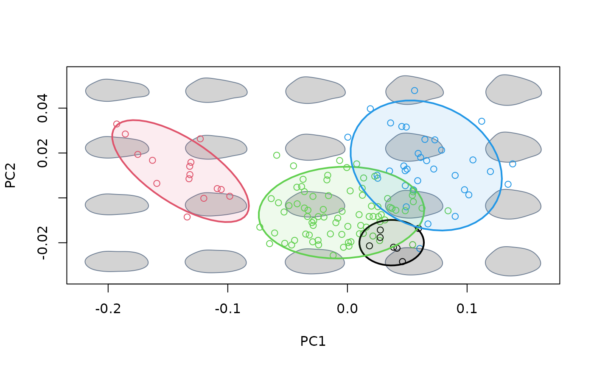

Project convex hulls or confidence ellipses enclosing a priori groups into an existing morphospace.
proj_groups(
mspace,
shapes = NULL,
groups = NULL,
ellipse = FALSE,
conflev = 0.95,
density = TRUE,
pipe = TRUE,
...
)An "mspace" object.
Optional shape data (if NULL, the function will look for
them first in mspace$projected$scores and then in
mspace$ordination$x).
Factor; classification of observations into groups. Its length
must be the same as the number of shapes provided in shapes.
Logical; whether to plot confidence ellipses (if FALSE,
convex hulls will be used instead).
Numeric; confidence level used for confidence ellipse(s).
Logical; whether to add density distribution for groups (univariate ordinations only).
Logical; is the function being included in a pipe?
Further arguments passed to hulls_by_group_2D() or
ellipses_by_group_2D().
If a plot device with a morphospace is open, convex hulls or
confidence ellipses enclosing the scores corresponding to groups
are projected into morphospace. If pipe = TRUE the supplied
"mspace" object will be modified by appending a $gr_class
slot to $projected, as well as by adding some graphical parameters
(stored into the $plotinfo slot), and returned invisibly.
The goal of this function is to add a classification for shapes
populating the morphospace to "mspace" objects, as well as to
facilitate group visualization. Other than that, it is just a wrapper for
hulls_by_group_2D and ellipses_by_group_2D.
#load and extract relevant data, packages and information
library(magrittr)
data("shells")
shapes <- shells$shapes
species <- shells$data$species
sp_shapes <- expected_shapes(shapes, species)
#generate basic morphospace, add sampled shapes and convex hulls for species
mspace(shapes, links = links, mag = 0.7, axes = c(1,2),
bg.model = "light gray") %>%
proj_shapes(shapes = shapes, col = c(1:4)[species], pch = 1) %>%
proj_groups(groups = species, col = 1:4, lwd = 2, alpha = 0.5)
#generate basic morphospace, add sampled shapes and 95% confidence for
#species
msp <- mspace(shapes, links = links, mag = 0.7, axes = c(1,2),
bg.model = "light gray") %>%
proj_shapes(shapes = shapes, col = c(1:4)[species], pch = 1) %>%
proj_groups(groups = species, col = 1:4, lwd = 2, ellipse = TRUE,
conflev = 0.95, alpha = 0.1)

#add legend using plot_mspace()
plot_mspace(msp, legend = TRUE, cex.legend = 2, pch.groups = 16)